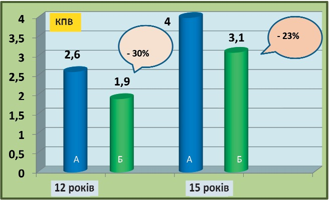
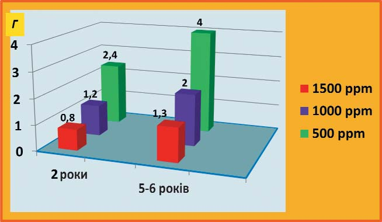
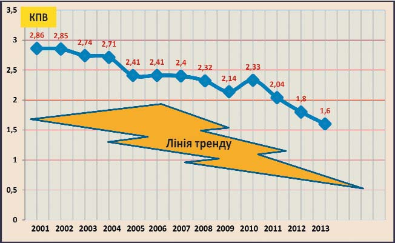
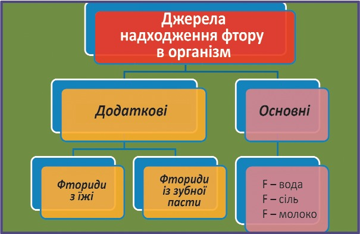

Наука · журнал «ДентАрт» 2017 №3
Обґрунтування методів профілактики карієсу в районах ендемічного флюорозу зубів
BASING THE METHODS FOR PREVENTION ОF DENTAL CARIES IN ENDEMIC FLUOROSIS REGIONS
У районах ендемічного флюорозу захворюваність карієсом зубів менша у порівнянні з іншими областями, однак як у дітей, так і у дорослих каріозна хвороба становить істотну медичну проблему, що вимагає адекватного вирішення. У роботі наведено дані описової епідеміології флюорозу і карієсу зубів у дитячого населення, проаналізовано чинники ризику і обґрунтовано профілактичні заходи на комунальному рівні. Особлива увага звертається на проблему використання фторовмісних зубних паст, які можуть бути джерелом додаткового надходження фтору в організм дитини в районі ендемічного флюорозу. Як альтернатива місцевій флюоризації зубів для підвищення їх структурної резистентності до карієсу рекомендовані мінералізуючі зубні пасти без фтору, протикаріозна ефективність яких доведена серією клінічних досліджень.
Як свідчить майже сторічний світовий досвід, профілактика карієсу зубів базується на раціональному за дозами і формами застосуванні фторидів. Практично повне позбавлення дітей від карієсу в ряді країн Західної Європи, яке спостерігаємо в наш час, відбулося завдяки програмам фторування.11,16,17 Рекомендації авторитетних міжнародних організацій, таких як Всесвітня організація охорони здоров'я та Міжнародна федерація стоматологів, з профілактики карієсу зубів засновані на системному і/або місцевому застосуванні фторидів, в тому числі застосуванні фторовмісних зубних паст з раннього дитинства протягом усього життя.13 При цьому наголошується, що фториди, які використовуються в рекомендованих дозах для профілактики карієсу зубів, можуть викликати легкі форми флюорозу, і це вважається прийнятним заради «порятунку» від каріозної хвороби.
Однак повного «порятунку» від карієсу методами фторизації не відбувається, і навіть більше – у районах, де природа подарувала населенню достатньо фтору у довкіллі, поряд з карієсом розвивається естетично неприйнятний флюороз зубів або його деструктивні форми. Така ситуація майже повністю виключає застосування фторидів для профілактики карієсу. Інші методи розроблені недостатньо.
Метою цієї роботи було обґрунтування комплексу заходів для профілактики карієсу зубів у районах ендемічного флюорозу з урахуванням можливого ризику надлишкового надходження фтору в організм при використанні фторовмісних зубних паст.
Методом мета-аналізу даних світової наукової стоматологічної літератури узагальнено досвід раціонального використання фторовмісних зубних паст для профілактики карієсу зубів і визначено параметри безпечних концентрацій фтору. Раніше проведено серію довготермінових клінічних досліджень ефективності мінералізуючих зубних паст без фтору в профілактиці карієсу зубів у дітей. Обґрунтовано комплекс профілактичних заходів і раціональні організаційні підходи при розробці та практичній реалізації програм первинної профілактики карієсу зубів у дітей, які мешкають у районах ендемічного флюорозу.

Результати і обговорення
Аналіз опублікованих даних епідеміологічних досліджень стоматологічної захворюваності серед населення України засвідчив, що осередки ендемічного флюорозу зубів є у Полтавській, Київській, Харківській, Донецькій, Сумській, Одеській, Чернігівській областях.1, 6, 9 Зуби дітей уражені флюорозом у ряді місцевостей Литви, Молдови та у багатьох регіонах Російської Федерації: Карелії, Удмуртії, Чувашії, Читинській, Московській, Нижньогородській, Рязанській і Тверській областях.2 Отже, проблема флюорозу зубів реально існує.
При цьому слід звернути особливу увагу на доказовість взаємозв'язків підвищеної концентрації фтору в питній воді і порівняно низької інтенсивності карієсу зубів у більшості досліджених районів. Так, при підвищеному вмісті фтору в Полтаві (2-2,5 мг/л), Миргороді (3,5-4,2 мг/л), Краснограді (2,2-2,8 мг/л) інтенсивність карієсу зубів у дітей менша у порівнянні з регіонами, де вміст фтору у воді нижчий від норми.7 У Донбасі після припинення фторування питної води захворюваність дітей карієсом різко зросла.10 У дослідженнях Каськова Л.Ф. і співавт., 2014; Berndt C. і співавт., 2008; Saag M. і співавт., 2012 вказувалося на зворотні взаємозв'язки підвищеного надходження фтору в організм та інтенсивності каріозної хвороби. Чіткі докази цього давно відомого феномену також можна бачити за узагальненими даними епідеміології карієсу зубів у РФ у районах з низьким і високим вмістом фтору в питній воді.2 Так, середнє значення КПВ 12-річних дітей, які проживають у районах з оптимальним або підвищеним вмістом фтору в питній воді, було на 30% менше, ніж у дітей цієї вікової групи, котрі мешкають у районах з низьким вмістом фтору у воді. У 15-річних дітей відмінності КПВ були 23% (рис. 1).
Однак очевидним є також інший дуже важливий факт – поширеність та інтенсивність карієсу зубів у дітей, які мешкають у районах з підвищеним вмістом фтору, істотно вищі, ніж можливості первинної профілактики карієсу. Отже, у районах ендемічного флюорозу профілактика карієсу зубів так само необхідна, як і в інших місцевостях.
Теоретичні передумови профілактики карієсу зубів
При розробці програм первинної профілактики карієсу зубів у районах ендемічного флюорозу, точно так само, як і для місцевості без нього, слід виходити з доказових факторів ризику розвитку каріозної хвороби: наявності кислотоутворюючих бактерій зубного нальоту і субстрату для утворення кислот, а також недостатньої структурної резистентності зубів. Важливо зазначити, що оптимальні умови для виникнення карієсу створюються при сукупності названих чинників і що дія кожного з них може частково чи повністю блокуватися захисними системними або зовнішніми силами: нейтралізуючою дією слини, механічним видаленням мікробного зубного нальоту та ін. Схематично взаємодію агресивних і захисних факторів показано на рис. 2.

Виходячи із зазначеного патогенезу карієсу зубів, основними доказовими методами первинної профілактики карієсу зубів є:
- зменшення мікробного зубного нальоту шляхом регулярного, двічі на день, чищення зубів з раннього дитинства все життя;
- обмеження доступності в зубному нальоті субстрату (вуглеводів) для кислотоутворюючої функції мікроорганізмів шляхом зменшення частоти вживання їжі і солодких напоїв до 5-6 разів на день;
- підвищення резистентності емалі зубів.
Важливо зазначити, що можливості підвищення резистентності зубів до карієсу шляхом системного або місцевого призначення фторидів у районах флюорозу практично вичерпані, оскільки фториди були доступні на всіх стадіях розвитку і дозрівання зубних тканин. Отже, необхідні інші методи, які рекомендуються нижче.
Чищення зубів
Як відомо, більшу частину зубної пасти діти ковтають (рис. 3), тому кількість зубної пасти, що видавлюється на зубну щітку, має бути не більше 5 мм (розміром з горошину). Слід також враховувати концентрацію активного фториду в зубній пасті, щоб не допустити надходження в організм дитини великої кількості фтору. На рис. 4 наведені дані Fejerskov O., Kidd E., 2004, згідно з якими в залежності від віку дитини в її організм надходить гранична кількість фтору (0,1 мг/кг ваги) при ковтанні від 0,8 до 4 г фторовмісної зубної пасти. Тому в ендемічних районах дітям до 6 років зубні пасти, що містять фтор, не рекомендуються. Замість них для профілактики карієсу можна застосовувати мінералізуючі дитячі зубні пасти без фтору. Якщо все ж використовуються фторовмісні зубні пасти, треба обов'язково контролювати екскрецію фторидів із сечею для своєчасного виявлення надлишкового надходження фторидів в організм дитини.14

Основні рекомендації ВООЗ щодо використання дітьми фторовмісних зубних паст13
- Діти заковтують значну частину зубної пасти, внаслідок чого при використанні фторовмісної пасти розвивається флюороз легкого ступеня.
- На упаковці фторовмісної зубної пасти повинно бути написано попередження, що діти до 6 років можуть чистити зуби лише під наглядом батьків і використовувати менше 5 мм зубної пасти.
- Зубні пасти, які містять фтор у концентрації 1500 ррм, дітям до 6 років не рекомендуються.
При чищенні зубів дітям потрібні допомога і постійний контроль батьків за правильним використанням зубної пасти.

Мінералізуючі речовини і зубні пасти
Розробка методів і засобів для підвищення структурної резистентності твердих тканин зубів до карієсу ведеться понад сорок років. У 1970-х роках було запропоновано метод ремінералізуючої терапії початкового карієсу за допомогою 10% розчину глюконату кальцію.4 Замість глюконату кальцію застосовувалися синтетичні ремінералізуючі розчини.8 Великою популярністю користувався «Ремодент», який став основою для створення ремінералізуючої зубної пасти.3 Медична ефективність названих засобів у профілактиці карієсу була значно скромнішою, ніж препаратів фтору, через погану розчинність кальційвмісних речовин. На початку нинішнього століття було розроблено принципово нові ремінералізуючі препарати у вигляді гелів та зубних паст, що містять комплекс мінеральних елементів Ca, P і Mg, здатних у ротовій рідині перетворюватися на іонні форми і проникати у тверді тканини зуба.5 У поєднанні з ксилітом цей «коктейль» під назвою «Мінералін®» виявився високоефективним у ремінералізації початкового карієсу і профілактиці нових каріозних уражень. У серії довгострокових (2-х і більше років) клінічних досліджень із залученням до програми контрольованого чищення зубів великої кількості (понад 2000) молодших школярів ми підтвердили можливість профілактики карієсу постійних зубів у дітей, за медичною ефективністю рівної найкращим брендам фторовмісних зубних паст. Результати однієї з робіт подано в таблиці 1. На рис. 5 подано дані багаторічного моніторингу інтенсивності карієсу постійних зубів у 12-річних дітей у двох великих школах м. Мінська, де молодші школярі для щоденного чищення зубів у шкільні дні використовували зубні пасти без фтору з активною речовиною «Мінералін®».
| Спостережувані групи дітей | Початковий КПВ ± S.E. | Через 24 місяці | Редукція приросту КПВ у порівнянні з контролем |
|---|---|---|---|
| «MINERALIN Kids» (n=180) | 0.29±0.13 | 0.95±0.10 | - 0.41 (30%), t=2.5; p<0.02 |
| «Пасивний контроль» (n=173) | 0.42±0.12 | 1.36±0.13 |

Режим харчування
Дотримання певного режиму харчування також є важливою ланкою в комплексі заходів з профілактики карієсу зубів у дітей, які мешкають у районах ендемічного флюорозу. Основні рекомендації можна звести до чотирьох тез, наведених нижче.
Три з чотирьох рекомендацій мають специфічні особливості, спрямовані на запобігання надмірному надходженню фтору в організм дитини.
Вуглеводна їжа — не частіше 5-6 разів на день, включаючи напої. Не рекомендуються напої типу кока-коли, лимонаду та ін. з низькою рН.
Харчові продукти – уникати продуктів, що містять великі концентрації фтору (наприклад, деякі сорти чаю, морська риба).
Питна вода – вживати бутильовану питну воду з низьким вмістом фтору – не більше 0,1 мг/л; інформацію на етикетці слід перевірити.
Харчова сіль – не повинна містити фтор (при купівлі продукту слід подивитися інформацію на упаковці).
Фториди
У районах ендемічного флюорозу фториди надходять в організм з питною водою. Тому слід усунути або зменшити додаткове надходження фтору з харчових продуктів, і особливо із зубних паст, оскільки і без цього є ризик розвитку флюорозу. Для ситуаційного аналізу можливих ризиків надлишкового надходження фтору можна використовувати схему, подану на рис. 6.

До додаткових методів профілактики карієсу зубів у районах ендемічного флюорозу належать протикаріозні препарати у вигляді полоскань рота, жувальні гумки з ксилітом, герметики для «запечатування» фісур постійних зубів, професійна гігієна рота, що включає комплекс індивідуальних методів профілактики.
Рекомендації з контролю надлишкового надходження фтору в організм
Фторована харчова сіль – не повинна вживатися в ендемічних районах флюорозу.
Бутильована питна вода – не допускати у продаж воду з вмістом фтору вище 0,1-0,2 мг/л.
Регулярні епідеміологічні обстеження дітей – визначення КПВ постійних зубів, виявлення флюорозу зубів (поширеність понад 10-15%).
Моніторинг екскреції фтору із сечею – за програмою наукових установ і/або центрів здоров'я; при концентрації фтору в сечі 0,1 мг і більше на кг ваги дитини є ризик розвитку флюорозу.
Організаційні аспекти реалізації основних методів первинної профілактики карієсу зубів на комунальному рівні
Чищення зубів – організація шкільних програм з використанням рекомендацій ВООЗ і міжнародного досвіду.
Вибір зубних паст – система освіти, батьки, педіатр, стоматолог, гігієніст.
Режим харчування – батьки, медперсонал, стоматолог, гігієніст, брошури.
Питна вода – санітарна інспекція, система освіти, батьки.
Моніторинг/контроль стоматологічного статусу дітей та рівня екскреції фтору – програми центрів здоров'я.
Висновки
- Профілактика карієсу зубів у районах ендемічного флюорозу необхідна.
- Рекомендуються загальноприйняті для профілактики карієсу методи, окрім фторидів для дітей.
- Слід враховувати сумарне надходження фторидів в організм при призначенні зубних паст і порадах щодо харчування.
- Для підвищення структурної резистентності зубів до карієсу можливе використання мінералізуючих препаратів і зубних паст.
Література
- Каськова Л.Ф., Солошенко Ю.И., Амосова Л.И., Бережная Е.Э. Показатели кариеса постоянных зубов у детей г. Полтавы//В кн. «Стоматология детского возраста и профилактика стоматологических заболеваний» – Сборник трудов II Российского регионального конгресса Международной ассоциации детской стоматологии (IAPD), 29.09-01.10.2014 г., Москва. – МГМСУ. – М. –2014. –С. 86-89.
- Кузьмина Э.М. Стоматологическая заболеваемость населения России. СЦ ВОЗ, МГМСУ, М., 1999. –228 с.; –2009. –236 с.
- Леонтьев В.К., Пахомов Г.Н. Профилактика стоматологических заболеваний. КМК-ИНВЕСТ, Москва, 2007. –430 с.
- Леус П.А. Клинико-экспериментальное изучение патогенеза кариеса зубов. Диссертация докт. мед. наук. Москва, ММСИ. –1977. –170 с.
- Матело С.К. Клинико-экспериментальное изучение новых лечебно-профилактических зубных паст и гелей, не содержащих фтор и обладающих реминерализующим действием. Автореф. дисс. канд. мед. наук. Санкт-Петербург. –2008. –22 с.
- Николишин А.К. Флюороз зубов. Украинская медицинская стоматологическая академия. – Полтава. –1995. –69 с.
- Новик И.О. Материалы по вопросу о кариесе зубов у детей в УССР. В кн. «Проблемы стоматологии». Сборник научных работ Киевского и Харьковского медицинских стоматологических институтов. Том III//Государственное медицинское издательство УССР. –Киев. –1956. –С. 5-12.
- Пахомов Г.Н. Первичная профилактика в стоматологии. М.: Медицина. –1982. –238 с.
- Хоменко Л.А. Терапевтическая стоматология детского возраста. – Киев, Книга плюс. –2007. –816 с.
- Чижевский И.В. Динамика заболеваемости кариесом зубов у детей Донбасса после отмены фторирования питьевой воды//Современная стоматология (Украина). –2002. –№1. – С. 53-56.
- Berndt C. et al. Fluorosis and caries in East German pupils.//Caries Research –2008. – V. 42. –P. 200. – Abstr. № 46.
- Fejerskov O., Kidd E.A.M. Dental caries. Blackwell Munksgaard, –2004. –560 p.
- Fluorides and Oral Health. Report of a WHO Expert Committee on Oral Health Status and Fluoride Use. WHO Technical Report Series 846. Geneva. –1994. –38 p.
- Ketley C.E., Lennon M.A. Urinary fluoride excretion in children drinking fluoridated school milk//International Journal of Pediatric Dentistry. –2000. – V. 10. –P. 260-270.
- Saag M. et al. Oral health and health care system in Estonia. – Symposium EPMA, Voronezh, Russia, 2012 – ISTOK, Voronezh. –2012. –P. 17-21.
- Schiffner U. et al. Oral health in German children, adolescents, adults and senior citizen in 2005//Community Dental Health. –2009. –V. 26. –P. 18-22.
- Zaborskis A., Milciuviene S. et al. Caries experience and oral health behavior among 11-13-year-olds: an ecological study of data from 27 European countries, Israel, Canada and USA//Community Dental Health. –2010. –V. 27. –P. 102-108.